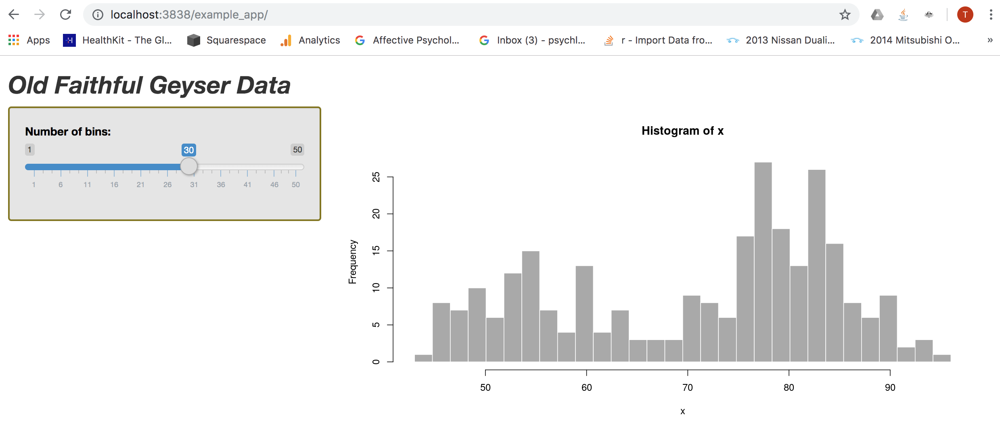

In this post, I demonstrate how encode files need for my Shiny app within a custom Dockerfile. So, rather than building a container with a pre-existing Docker image, I make my own custom image.
Start by examining which images I have stored on my machine:
docker image ls
REPOSITORY TAG IMAGE ID CREATED SIZE
rocker/shiny-verse latest 94490fbd4d3b 9 days ago 1.86GB
mysql latest d435eee2caa5 3 weeks ago 456MB
nginx latest 231d40e811cd 3 weeks ago 126MB
bretfisher/jekyll-serve latest 144799b59c39 5 months ago 269MB
openanalytics/shinyproxy-demo latest 9a83d7d80ebf 10 months ago 925MB
postgres 9.6.2 b3b8a2229953 2 years ago 267MB
postgres 9.6.1 4023a747a01a 2 years ago 265MB
As you can see, the rocker/shiny-verse image is available from when I last pulled it from Dockerhub.
Now I’m going to make a new Dockerfile that hardcodes the styling of my Shiny app. Normally the css stylesheet for a Shiny app is stored in a www folder, which is situated in the same directory as your app files.
Below, I navigate to the root of the folder in which my Shiny app is contained and create the Dockerfile.
cd rocker_proj
touch Dockerfile
The Dockerfile is blank when I open it. I add the following content, which is explained below:
cat Dockerfile
## FROM rocker/shiny-verse
##
## WORKDIR /srv/shiny-server/
##
## COPY /srv/shinyapps/example_app/www/ example_app/www/All dockerfiles need to begin with the FROM instruction. This instruction indicates the parent image from which you are building. The WORKDIR command sets the working directory for any RUN, CMD, ENTRYPOINT, COPY and ADD instructions that come after it in the dockerfile.
The COPY instruction copies new files or directories from the source (i.e. the host) and adds them to the filesystem of the container. You can specify the path of the source but otherwise, this path will be taken from the build context (i.e. the folder you are in when you build the container). In this example, I am in the rocker_proj folder. From within this folder, the path to the www folder containing my stylesheet will be /srv/shinyapps/example_app/www/. We already know that within the container, the working directory is /srv/shiny-server/. When I add example_app/www/ as the destination, these directories will be created with in the container as subdirectories of the working directory. Note that there is no / before the destination path — this ensures that Docker will treat it as a relative path (relative to WORKDIR) and not an absolute path.
According to Docker documentation, “You are strongly encouraged to use VOLUME for any mutable and/or user-serviceable parts of your image”. Thus, I wouldn’t ordinarily hardcode css styling into the image layers — because the styling is likely to need alteration over time. Rather, I should use the COPY instruction only for files that really aren’t likely to change.
To build the image and store it locally, I run:
docker image build -t custom_rocker .The -t flag stands for the name of the “tag” I am giving the image: in this case, “custom_rocker”. The dot . at the end means that the image should be built using the Dockerfile in the current folder. Also, if I wanted to push the new image to my Dockerhub repo, I would need to prefix tag with my username. So it would be `timothydeitz/custom_rocker".
Finally, I build the new container, as follows:
docker container run --rm -p 3838:3838 -v /Users/timothyjamesdeitz/rocker_proj/srv/shinyapps/:/srv/shiny-server/ -v /Users/timothyjamesdeitz/rocker_proj/srv/shinylog/:/var/log/shiny-server/ custom_rocker
Which gives me the following output:
[2019-12-11T11:32:16.945] [INFO] shiny-server - Shiny Server v1.5.12.933 (Node.js v10.15.3)
[2019-12-11T11:32:16.961] [INFO] shiny-server - Using config file "/etc/shiny-server/shiny-server.conf"
[2019-12-11T11:32:17.058] [WARN] shiny-server - Running as root unnecessarily is a security risk! You could be running more securely as non-root.
[2019-12-11T11:32:17.069] [INFO] shiny-server - Starting listener on http://[::]:3838
[2019-12-11T11:32:58.564] [INFO] shiny-server - Created bookmark state directory: /var/lib/shiny-server/bookmarks
[2019-12-11T11:32:58.566] [INFO] shiny-server - Created user bookmark state directory: /var/lib/shiny-server/bookmarks/shiny
*** '/var/log/shiny-server//example_app-shiny-20191211-113258-36645.log' has been created ***
*** /var/log/shiny-server//example_app-shiny-20191211-113258-36645.log ***
Listening on http://127.0.0.1:36645To check that the css styling has been encoded into the image itself, I remove the www folder from my local shiny app directory. Then I head to the browser at http://localhost:3838/example_app/ to check it out:

Success! I now have a custom border around the side panel.